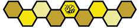

2026-2027 FIRST Championship жарысында командалар 6 дивизионға бөлінеді. Әр дивизион дивизионда жеңген ALLIANCES-ті анықтау үшін 13.6 Іріктеу MATCHES бөлімінде және 13.7 Плей-офф MATCHES бөлімінде сипатталғандай стандартты турнир өткізеді. Дивизионда жеңген осы 6 ALLIANCES 15.5 FIRST Championship бойынша FIRST Tech Challenge Championship жеңімпаздарын анықтау үшін FIRST Championship FIELD(s) алаңдарында өтетін чемпионаттың плей-офф кезеңіне өтеді.
Өткізу орнының шектеулері мен іс-шарадағы командалардың көп болуын ескеру үшін FIRST Championship үшін қазылар бағалауы тәртібі өзгертілуі мүмкін. Тәртіпке немесе марапаттарға енгізілетін кез келген өзгерістер 1.7.3 Team Updates бөлімінде сипатталғандай, кестеге сәйкес шығатын соңғы Team Update (командаларға арналған жаңарту) құжатында немесе одан бұрын жарияланады.
6 Марапаттар (A) бөліміндегі марапаттардың барлығы 15-1-кестеде көрсетілгендерді қоспағанда, тек әр дивизионда ғана беріледі.
15-1-кесте: FIRST Championship марапаттары
| Марапат | Әр дивизионда | FIRST Championship |
|---|---|---|
| Inspire Award | 1-ші, 2-ші және 3-ші орындар | 1-ші орын |
| FIRST Leadership List | 0 | 10 |
| Compass Award | 0 | 1 |
FIRST Championship BIOBUZZ турнирі үшін SCORING ELEMENTS саны, түрі мен орналасуы және ұпай жетістіктерінің (RP) шекті мәндері өзгертілуі мүмкін. Ойынға енгізілетін кез келген өзгерістер 1.7.3 Team Updates бөлімінде сипатталғандай, кестеге сәйкес шығатын соңғы Team Update құжатында немесе одан бұрын жарияланады.
Барлық дивизион FIELDS еденнен шамамен 24 дюйм (60.95 см) биіктікке көтерілген подиумдарға орнатылады. Барлық DRIVE TEAM мүшелері мен FIELD STAFF еден деңгейінде болады. Командалар пайдалану үшін жаттығу FIELDS-тің бір бөлігі де биіктетіліп орнатылады. Биіктетілген FIELD-тің қандай болатынын көру үшін Kickoff-тағы (маусымның ресми басталуындағы) FIELD шолу бейнежазбасын қараңыз.
Барлық дивизион FIELD периметрлері орнына бекітіледі және оларда AndyMark Perimeter Straps (периметр бекіткіш белдіктері) болмайды.
Кейбір немесе барлық дивизион FIELDS-те олардың сыртқы түрін өзгертетін қосымша өзгерістер болуы мүмкін, оның ішінде басқа немесе қосымша жапсырмалар, металл жабындар, материалдардың өзгеруі және жарықтандыру. Бұл өзгерістердің тек эстетикалық сипатта болуын және FIELD жұмысына не ROBOT конструкцияларына әсер етпеуін қамтамасыз ету үшін барлық күш салынады. Бұл өзгерістер туралы толық мәліметтер 1.7.3 Team Updates бөлімінде сипатталғандай, кестеге сәйкес шығатын соңғы Team Update құжатында немесе одан бұрын жарияланады.
FIRST Championship жарысындағы ALLIANCES 3 ROBOTS-тан тұрады. Әр дивизионның плей-офф турнирі алдында ALLIANCES 13.7.1 ALLIANCE таңдау тәртібі бөлімінде сипатталған тәртіппен таңдалады; алайда тәртіп мынадай 2-ші таңдау раундымен жалғасады:
2-раунд: Әр ALLIANCE жетекшісінің екінші таңдауы үшін де сол әдіс қолданылады, тек таңдау реті керісінше болады: ALLIANCE 8 бірінші, ал ALLIANCE 1 соңғы болып таңдайды. Бұл тәртіптің нәтижесінде әрқайсысы 3 командадан тұратын 8 ALLIANCES құрылады.
Дивизиондық және чемпионаттық Плей-офф MATCHES кезінде ALLIANCES өз MATCHES-тің әрқайсысын өз ALLIANCE-ындағы 3 ROBOTS-тың кез келген 2-еуімен бастауына болады. ALLIANCES MATCH алдында қай 2 ROBOTS ойнайтынын FIELD STAFF-қа хабарлауы міндетті емес, бірақ шешімді кеш қабылдау арқылы G301 бойынша MATCH басталуын кешіктірмеуі тиіс.
Мысалы, 2 ROBOTS кезек аймағынан шығып кеткеннен кейін ALLIANCE MATCH-те басқа 2 ROBOTS ойнайды деп шешсе, бұл MATCH-ті кешіктіру болып саналуы ықтимал.
C301 *Қайта ойнауда сол ROBOTS пайдаланылады. Егер Плей-офф MATCH-ін қайта ойнау қажет болса, қайта ойнауда пайдаланылатын 2 ROBOTS бастапқы MATCH-тегімен бірдей болуы тиіс. Жалғыз ерекшелік: егер Head REFEREE пікірінше ARENA FAULT ROBOT-ты жұмыс істемейтін күйге келтірсе, бұл жағдайда ROBOTS-ты ауыстыруға болады. Егер тең нәтижеге байланысты қосымша MATCH ойнатылса, қосымша MATCH-те 3 ROBOTS-тың кез келген 2-еуі ойнауына болады.
FIRST Tech Challenge командалары FIRST Championship жарысында көптеген іс-шаралармен салыстырғанда айтарлықтай көп MATCHES ойнайды және іс-шарада командалар да едәуір көп болады. 3-ші ROBOT-ты таңдау әр ALLIANCE-қа кіріктірілген қосалқы ROBOT береді және MATCH-тің әртүрлі стратегияларын ескеріп таңдау жасауға икемділік береді.
FIRST Championship плей-оффында ойнайтын ALLIANCE-тағы әр команданың T704 бойынша MATCH алдындағы стратегияға, ROBOT-ты жөндеуге және оған қызмет көрсетуге, сондай-ақ команданы қолдаудың басқа функцияларына көмектесу үшін ARENA ішінде қосымша 3 пит-бригада мүшесі болуына болады. Қосымша пит-бригада мүшелері ARENA-ның пит-аймақтарында болуы тиіс.
Қосымша команда мүшелері ересектер немесе STUDENTS болуы мүмкін.
FIRST Championship плей-офф турнирінің құрылымы туралы толығырақ ақпарат алдағы Team Update құжаттарының бірінде жарияланады.
